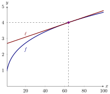
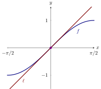
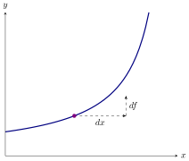
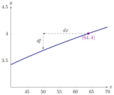
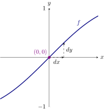
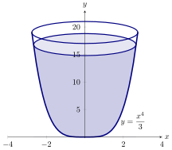

We use a method called “linear approximation” to estimate the value of a
(complicated) function at a given point.
Given a function, a linear approximation is a fancy phrase for something you already
know:
The derivative is the slope of the tangent line.
Except in this section, the emphasis is on the line.
If is a differentiable function at , then a
linear approximation for at is given by
Note that is just the tangent line to at .
A linear approximation of is a “good” approximation as long as is “not too far”
from . If one “zooms in” on sufficiently, then and the linear approximation are
nearly indistinguishable. As a first example, we will see how linear approximations
allow us to make approximate “difficult” computations.
Use a linear approximation of at to approximate .
To start, write So our linear approximation
is

Now we evaluate and compare it to . From this we see that the linear approximation,
while perhaps inexact, is computationally
easier than computing the cube
root.
With modern calculators and computing software it may not appear necessary to use
linear approximations. In fact they are quite useful. In cases requiring an
explicit numerical approximation, they allow us to get a quick rough estimate
which can be used as a “reality check” on a more complex calculation. In
some complex calculations involving functions, the linear approximation
makes an otherwise intractable calculation possible, without serious loss of
accuracy.
Use a linear approximation of at to approximate .
To start, write so our linear
approximation is

Hence a linear approximation for at is , and so . Comparing this to , we see that the
approximation is quite good. For this reason, it is common to approximate with its
linear approximation when is near zero.
Differentials
The notion of a differential goes back to the origins of calculus, though our modern
conceptualization of a differential is somewhat different than how they were initially
understood.
Let be a differentiable function. We define a new independent variable , and a new
dependent variable The variables and are called
differentials. Geometrically,
differentials can be interpreted via the diagram below

Note, it is now the case (by definition!) that
The differential is:
times . A single variable.
The differential is:
times . A single variable that is dependent on .
Essentially, differentials allow us to solve the problems presented in the previous
examples from a slightly different point of view. Recall, when is near but not equal
zero, hence, Since is simply a variable, and is simply a variable, we can replace
with to write
Adding to both sides we see While this is something of a “sleight of hand” with
variables, there are contexts where the language of differentials is common. Here is
the basic strategy:
We will repeat our previous examples using differentials.
Use differentials to approximate .
Set . We want to know . Since , we set . Setting ,
we have
Here we see a plot of with the differentials above marked:

Now we must compute :
Hence .
Use differentials to approximate .
Set . We want to know . Since , we will set and .
Write with me
Here we see a plot of with the differentials above marked:

Now we must compute :
Hence .
The upshot is that linear approximations and differentials are simply two slightly
different ways of doing the exact same thing.
Error approximation
Differentials also help us estimate error in real life settings.
The cross-section of a ml glass can be modeled by the function :

At cm from the base of the glass, there is a mark indicating when the glass is filled
to ml. If the glass is filled within millimeters of the mark, what are the bounds on
the volume? As a gesture of friendship, we will tell you that the volume in milliliters,
as a function of the height of water in centimeters, , is given by Note: If you persist
in your quest to learn calculus, you will be able to derive the formula above like it’s
no-big-deal.
We want to know what a small change in the height, does to the volume
. These small changes can be modeled by the differentials and . Since and
we use the fact that with to see Hence the volume will vary by at most
milliliters.
New and old friends
You might be wondering, given a plot ,
What’s the difference between and ? What about and ?
Regardless, it is now a pressing question. Here’s the deal: is the average rate of
change of with respect to . On the other hand: is the instantaneous rate of
change of with respect to . Essentially, and are the same type of thing, they
are (usually small) changes in . However, and are very different things.
- is the change of associated to .
- is the change in needed to make the following relation true:
Suppose . If , what is ? What is ?